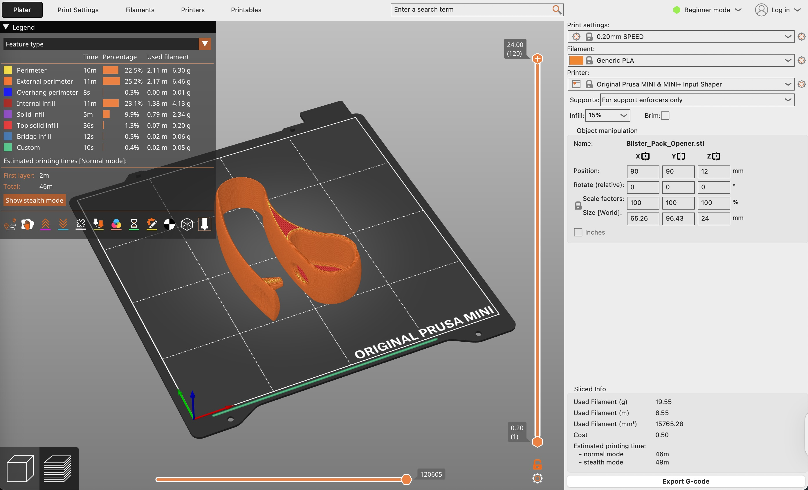
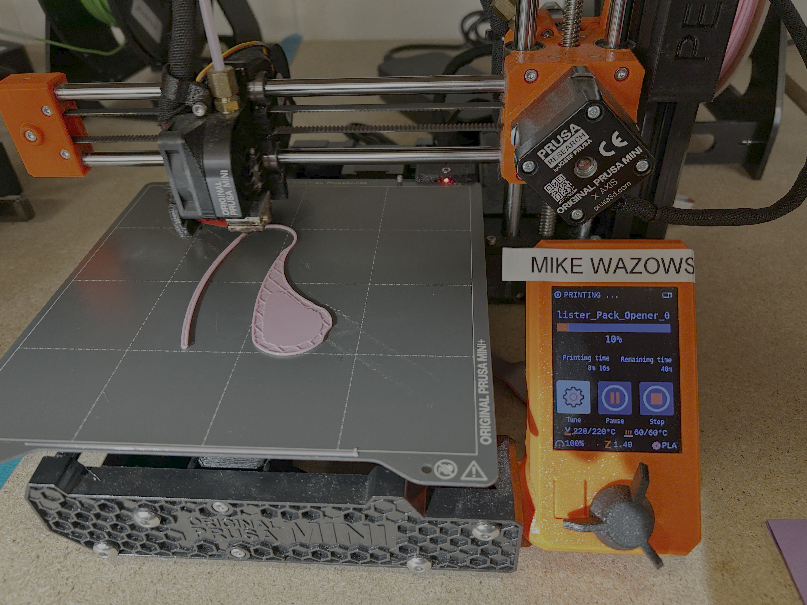

This project solidified my understanding in printing something useful quickly. I explored the Makers Making Change Assistive Device catalog and found a blister pack opener that I knew I wanted to make. Although I saw use for it in opening stubborn DayQuil medicine while sick and weak, I see it can also be used for people who are generally lacking in arm strength or percision. I'm not sure who designed it, but they made it specifically for those with arthritis or limited hand strength. Here are a few notes on my experience:
a. Easy and simple to download and print.
b. Works as expected, and it has a container-like shape to catch the capsule you pop out! However, I think the description of the design should note that this feature is a bit easier to use for right handed people because of the side the container is on. Still, it is easy to use and can probably be flipped and printed for left handed people.

